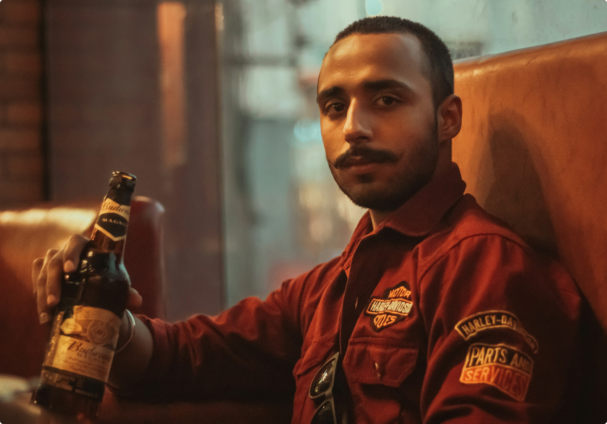
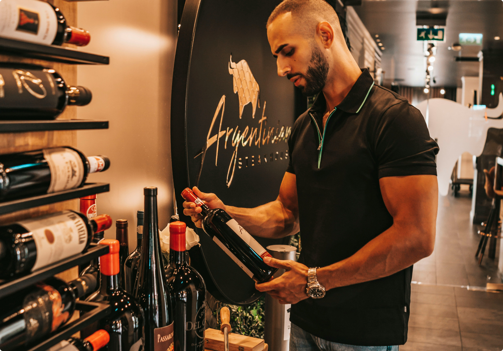
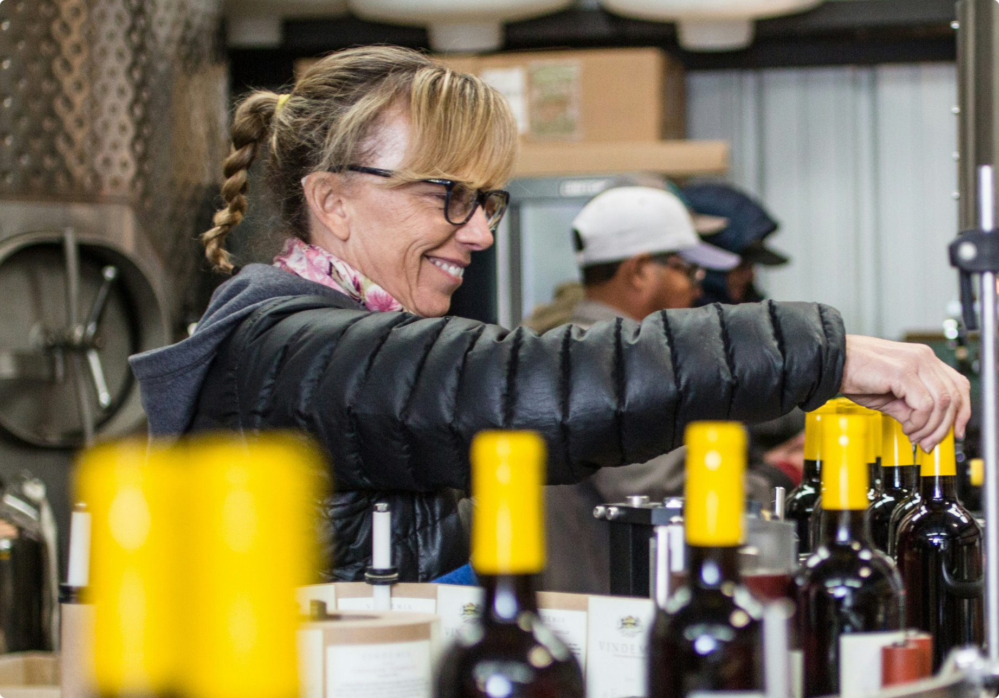

Vinheria Agnello
Sobre a Nossa História
Há mais de 15 anos, a Vinheria Agnello nasceu em São Paulo com o propósito de compartilhar a paixão pelo mundo dos vinhos. Fundada por Giulio Agnello, a empresa familiar construiu sua trajetória oferecendo uma ampla variedade de rótulos nacionais e internacionais, sempre valorizando a qualidade, a tradição e o atendimento personalizado.Ao longo dos anos, a Vinheria conquistou seus clientes por meio do conhecimento de sua equipe, que oferece orientações sobre uvas, regiões, vinícolas e harmonizações, ajudando cada pessoa a encontrar o vinho ideal para diferentes paladares e ocasiões.
Com as mudanças no comportamento dos consumidores e os desafios enfrentados durante a pandemia, surgiu a oportunidade de expandir sua presença para o ambiente digital. Com o incentivo de Bianca, filha de Giulio, a vinheria iniciou sua jornada no e-commerce, buscando levar a experiência acolhedora e especializada da loja física para o mundo virtual.
Hoje, a Vinheria Agnello continua unindo tradição, conhecimento e inovação, aproximando pessoas de novas experiências e tornando o universo dos vinhos mais acessível a todos. Conheça mais dos sobre os produtos na página dos vinhos.
Equipe
-
Bianca Agnello - Gestora e responsável pelo digital
Criativa e conectada às novas tecnologias, Bianca lidera a expansão digital da vinheria. tornar a experiência de compra online prática, intuitiva e acolhedora, mantendo a essência familiar da marca.
-

Giulio Agnello - Fundador
Apaixonado pela tradição dos vinhos, Giulio fundou a vinheria com o objetivo de oferecer rótulos de qualidade e um atendimento próximo. Seu conhecimento e sua experiência orientam a seleção dos vinhos da casa
-

Rafael Martins - Consultor
Com grande interesse por uvas e regiões produtoras, Rafael auxilia os clientes na escolha de rótulos e sugere harmonizações para refeições, encontros especiais e momentos do dia a dia.
-

Marina Santos - Especialista
Atenta aos diferentes paladares, Mariana ajuda iniciantes e apreciadores a descobrir novos sabores. Seu trabalho é apresentar opções que combinem com cada ocasião e preferência.